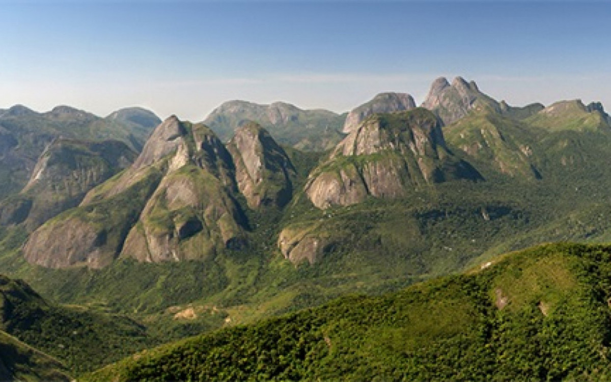
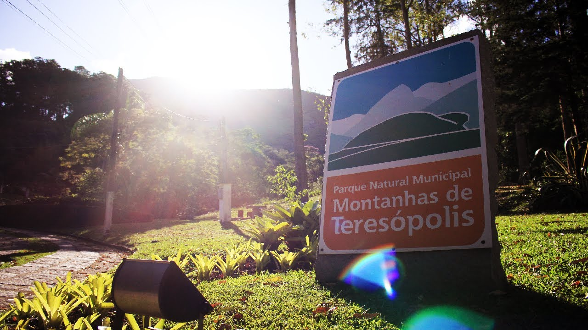

BEM-VINDO AO TERÊ VERDE
Explore as melhores trilhas e cachoeiras de Teresópolis.
Aqui você encontra informações sobre os principais parques, reservas e trilhas da região, além de dicas para aproveitar ao máximo sua experiência na natureza.
PARQUES E RESERVAS

